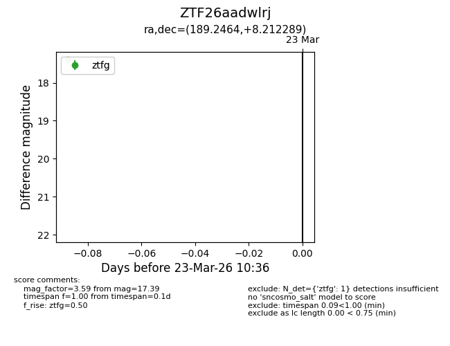
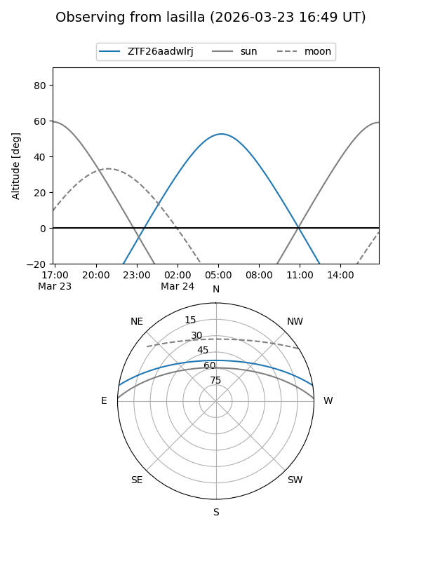
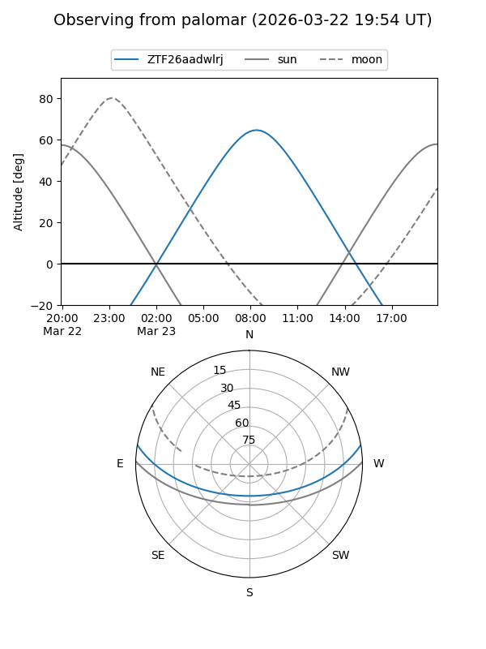

ZTF26aadwlrj
Target ZTF26aadwlrj at 2026-03-23 10:38
Aliases and brokers:
FINK: link
Lasair: link
ALeRCE: link
alt names
ZTF26aadwlrj (ztf,fink_ztf)
Coordinates:
equatorial (ra, dec) = 189.2464,+8.21229
equatorial (HMS+DMS) = 12:36:59.13,+08:12:44.24
galactic (l, b) = (292.0117,+70.77699)
Flags:
Photometry:
last ztfg=17.39
1 ztfg detections
Lightcurve

Visibility


Additional plots